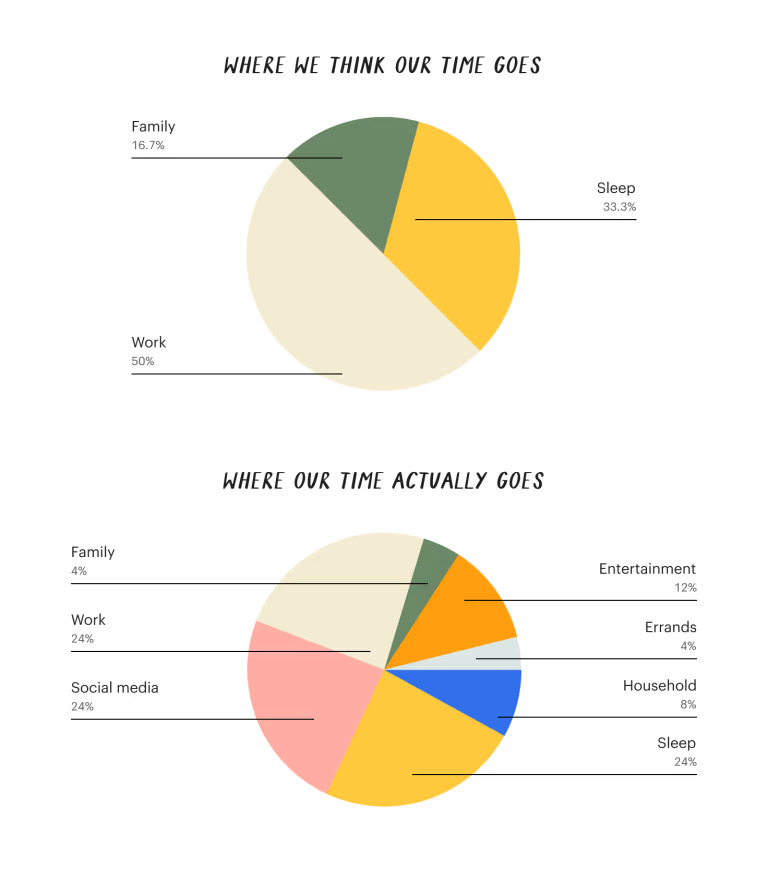

Subtract the time you need to sleep and you’ve already eaten up one-third of your day. Take away another 8 hours for work, and now two-thirds of your hours are accounted for — and that doesn’t include a commute or after-hours emails. At most, you’re left with 8 hours in a day for everything else. Realistically though — after childcare, family responsibilities, preparing meals, eating, tidying, paying bills, and any other need-to-do responsibilities — it’s quite a bit less. Based on a 2019 American Time User Survey conducted by the U.S. Bureau of Labor Statistics, adults had an average of 5.19 hours of leisure per day, including categories like “socializing and communicating,” “watching tv,” and “playing games”. These 5.19 hours, or less, are the space you have for anything from side projects to self-care. Similarly to how money management asks us to budget our finances, time management demands that we budget our hours. Using these hours wisely, to live a life that’s both ambitious and balanced, means aligning your time with your priorities — whether that’s getting in shape, improving your marriage, or reading more books. But sometimes the math just doesn’t add up. In between unexpected hiccups in our day and tasks that seemingly materialize from thin air, those five hours shrink down to three, two, one, or none at all. Rather than recognize the latent forces that whittle away our hours, we’re overcome with guilt about our inability to manage our time. It doesn't have to be this way. We can implement time management principles to achieve our goals and get more done, while also accepting that sometimes we'll fall short of our own expectations. This realistic guide to time management is about making the most of our hours, while avoiding overwhelm and learning to work with the constraints on your time. You'll find advice on getting a handle on where you currently spend your time, creating a realistic “time budget” to guide your daily decision-making, and translating your time budget into flexible daily and weekly plans.
We’re not great at intuitively understanding where our time goes — we’re prone to overestimating how much we work and underestimating the time we spend on distractions. Rather than guessing at how we spend our time, follow these steps to complete a time audit: Select 1-3 days to perform your time audit. Print off the time tracking sheet below, one for each day. Set an hourly timer during your waking hours (e.g. 1PM, 2PM, 3PM). When the timer goes off at the hour, jot down what you did in the previous hour. Be honest — this time audit is for you, not your boss. If you were on Twitter while you were supposed to be working, write that down. At the end of your time audit period, review your time tracking sheet(s), searching for trends and then grouping your hours into specific categories (e.g. sleep, social media, work, cooking, exercise, entertainment, childcare, etc). Use the following questions to guide your review: What is my biggest time category? How much of my work hours are spent on focused work? Communication? Distractions? What do I spend most of my post-work hours doing? How much time do I spend on distracting activities overall? Am I spending an adequate time on goal-driven activities? How many of my hours are devoted to health and/or self care activities? You can conduct a time audit with any kind of timer, but you may find it easier in combination with one (or both) of these time tracking apps: Toggl: Track the time you spend both offline and online, on desktop and mobile. This tool integrates with Todoist (web), helping you to track how much time you spend on each task. RescueTime: Automate your time tracking by installing RescueTime on your desktop and mobile devices. This app logs the time you spend on websites and apps, grouping your activity into categories like Productive”, “Neutral”, and “Unproductive”. You can check your Daily Dashboard for a productivity score from 0-100. With your time audit complete, and a greater understanding of how you spend your time, you can pinpoint areas for improvement and work towards better time management.
If you want to know your priorities, look at where you spend your time. Maybe you thought you were prioritizing learning, but your time audit revealed that days went by when you didn’t click into your online course or dive into your nightstand book stack. Time management is about making your stated priorities line up with your actual priorities. You likely have a long list of things you want to accomplish in life. But when everything is a priority, nothing is a priority. Instead we’re overwhelmed with options, feel a lack of focus, and inevitably experience analysis paralysis. The solution is to move away from the jumble of I-should-dos to and towards a narrow list of priorities. time management priorities Zero in on your most important goals and identify the most impactful actions that will help you achieve them: To forge closer bonds with your children, prioritize spending quality time with them. To eat healthier, prioritize cooking healthy meals at home. To earn a degree, prioritize studying and readings. Limit yourself to a maximum of five priorities at any given time. Pay attention to whether those priorities fall into the “work” or “life” buckets, and ensure you always have at least two in the latter — having only work priorities is a blueprint for burnout. Prioritizing some things means de-prioritizing others. Go back to your time audit and look for activities that don’t line up with your new list. This will mean making some tough decisions, like scaling back your volunteering commitments to spend more quality time with your partner or dropping out of your friends’ fantasy football league to get your business off the ground. Only you will know what time well spent looks like. By carefully examining your current priorities, you can intentionally decide where to spend your time.
A money budget has spending allowances; a time budget has hourly allowances. After narrowing down your priorities, assign specific amounts of time to each one. Consider hourly allowances on a daily and/or weekly basis. Similar to how you would assign “$150 a month for dining out” or “$50 a month for media subscriptions”, allocate “5 hours a week for exercise”or “1.5 hours a weekday for cooking”. If you’re unsure of the time allowance you should allocate to each of your priorities, simply choose an amount of time that you think you can realistically maintain. Parkinson’s Law states that the amount of work expands to fit the amount of time you give it. By applying time constraints and sticking to them, we might not accomplish everything we intended, but we can trade perfection for speed and complete more than we originally imagined. Of course, budgets don’t ensure spending our money, or in this case, time, perfectly. Just as you might slip up and splurge or have an emergency that eats into your savings, you’re bound to misallocate homekeeping time to entertainment or have unexpected tasks deplete your time budget. That’s okay. The goal isn’t perfection, but awareness. There are times that events outside of your control force you to abandon your time budget, but that doesn’t mean you should give up on time management altogether. If you’re guided by your time budget, you’ll build greater awareness of the trade-offs of your choices and make more intentional decisions about your time. Practice time blocking your day With your priorities and time budget in place, put your time budget into action with time blocking: “Time blocking is a time management method that asks you to divide your day into blocks of time. Each block is dedicated to accomplishing a specific task, or group of tasks, and only those specific tasks. Instead of keeping an open-ended to-do list of things you’ll get to as you’re able, you’ll start each day with a concrete schedule that lays out what you’ll work on and when.” Here’s how to use the time blocking method: Choose your tool: Use a blank page of paper, a daily planner, a digital calendar, or a to-do list app. Create time blocks: Starting from the first thing in the morning, add time blocks dedicated to specific tasks ranging from 15 minutes to two hours. . For example, if you have 1.5 hours dedicated to cooking each day on your time budget, add a time block on your calendar from “5:00PM-6:30PM”. Ensure your time blocks are specific and span your entire day (e.g.“breakfast” from 7:00AM-7:30AM, “file expense reports” from 2:00PM-3:00PM and “reading” from 10:30PM-11:00PM). Adjust accordingly: When ad-hoc tasks emerge and/or certain tasks take longer than you anticipated, simply adjust your time blocks. Shift time blocks to later in the day or postpone them to later in the week.
When we start our days without a game plan, we tend to be reactive. Rather than moving strategically from priority to priority, we haphazardly dip into our inboxes with each email ping or focus our energy on urgent but unimportant tasks. The best remedy for reactivity is planning ahead. When we pause and think about our priorities before diving into the deep end of our days, we can approach our hours ahead with intention and focus. Planning ahead is a cornerstone of time management — we suggest both weekly and daily planning sessions: Plan your day: Whether you opt for time blocking or another productivity method entirely, it’s worth planning your day in advance. For best results, complete your daily planning the night before, carving out time for everything from sharing a departmental update at work to phoning your grandparents. Plan your week. Implement a weekly review where you look back at the previous seven days and plan for the ones ahead. Ask yourself a slew of questions to help with planning: What did I want to accomplish but couldn’t last week? What prevented me from putting my priorities first? What is the most impactful thing I want to accomplish in the coming week?
For many, planning can become a time cost in itself, leading to more stress. Keep these three rules in mind for daily and weekly planning:
Effectively using the hours you have is only one side of the time management equation. On the other side of this math problem? Strategies to create more hours in your day. While you can’t add a 25th hour to the day, there are ways to make 24 hours feel like a whole lot more.
There’s a big, glaring limitation to time management that most productivity experts gloss over: your time isn’t entirely under your control. Traditional time management suggests that if we plan perfectly and prioritize right, we can use our hours to live exactly the life we want. We can have great relationships, get promoted at work, and fit in five workouts a week. While this logic isn’t untrue, it’s incomplete at best. At worst, it sets unrealistic expectations that set us up to feel guilty and inadequate when we fail. Even with the best of intentions, there will be days or even weeks that pass when we wonder where our time went. When a child's temper tantrum takes over your morning or a looming deadline means pulling an all-nighter, our time budgets become irrelevant and the idea of balance feels quaint. But rather than being racked with guilt about our inability to manage our time, it’s better to recognize time management for what it is: a system for improvement, not perfection. Defining our priorities is valuable even if we can’t always place them at the top of our list. Recognizing where our time goes is worthwhile, even if we can’t quite use our hours the way we would like. A daily plan is worth creating, even when we only make it part-way through. By continuously returning to time management principles and implementing strategies for finding focus and ditching distraction, we can fill our minutes, hours, and days with meaningful work and memorable life moments. At least, more of the time.
To get additional help check out this page with useful time management apps: Click here